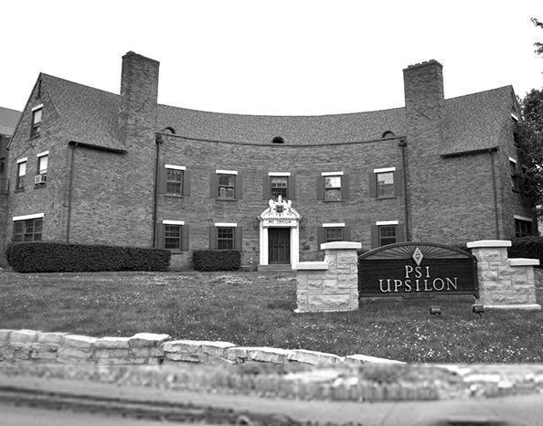

Chapter 24 on the roll
The Omicron


- Position on the roll#24
- InstitutionUniversity of Illinois
- Chartered1910
- StatusInactive since 2026
- Coat of armsfull-size PDF

In the archive
Pages that name the Omicron Chapter or its institution.
Named on 794 pages across 308 volumes of the archive.
…Convention, in Ann Arbor and Detroit. In ' honor of the two gatherings the Omicron Chapter of Delta Kappa Epsilon entertained the Psi U. and the Alpha Delt. men at its beautiful Chapter House on Tuesday evening, April 28. This affair the ho…
Page7…oncerning a proposed application for a charter from the Aztec Club, of the University of Illinois. Referred to Committee on New Business.* The Committee on the Annual Communication reported General Resolu tions Nos. 5, 6 and 7 and Special Resoluti…
…bmitted the following in relation to the petition of the Aztec Club of the University of Illinois : The Committee on Unflnished Business recommends to the Con vention the following resolution : That no definite action on the petition from the Azte…
…p ted. {General Resolution No. 3.) 8. In relation to the Aztec Club of the University of Illinois. Adopted. {General Resolution No. i.) 4. To give Bro. Harry T. Nightingale (Phi '95) privilege of the floor, to express his views on the application…
…society, spoke in its behalf. Mr. M. Ross Haynes of the Aztec Club of the University of Illinois spoke in behalf of its application for a charter. Both petitions were referred to the Committee on New Business. Bro. Samuel M. Havens {Upsilon '99)…
…ommittee of the Whole to hear the representatives of the Aztec Club of the University of Illinois and the Chi Delta Psi Society of the University of Toronto. The Convention re-assembled at 3:45 P. M. The Committee of the Whole reported through Bro…
…n). Bro. Bridgman read two proposed telegrams to be sent to Aztec Ci-ub at University of Illinois and to Bro. Goldwin Smith, Toronto, Canada, the flrst in the form of congratulations and the second an expression of sympathy and good wishes. It was…
…IX A) THE COMMUNICATION OF THE EXECUTIVE COUNCIL TO THE CONVENTION OF 1911 The Omicron Chapter. On May 38, 1911, the petitioners who had formerly been members of the Aztec Club were duly installed as a chap ter of Psi Upsilon at the University…
Page12…^ University of California 1815 Highland Place, Berkeley, Calif. OMICRON � University of Illinois 410 East Green St., Champaign, 111. DELTA DELTA � Williams College Williamstown, Mass. THETA THETA � University op Washington 4532 Eighteenth Ave. N.…
…� University of California 1815 Highland Place, Berkeley, Calif. OMICRON � University of Illinois 410 East Green St., Champaign, 111. DELTA DELTA � Williams College Williamstown, Mass. THETA THETA � University of Washington 4532 Eighteenth Ave. N.…
…� University of California 1815 Highland Place, Berkeley, Calif. OMICRON � University of Illinois 410 East Green St., Champaign, 111. DELTA DELTA � Williams College Williamstown, Mass. THETA THETA � University of Washington 4532 Eighteenth Ave. N.…
…� University of California 1815 Highland Place, Berkeley, Calif. OMICRON � University of Illinois 410 East Green St., Champaign, 111. DELTA DELTA � WiLLLi.MS College Williamstown, Mass. THETA THETA � University op Washington 4532 Eighteenth Ave. N…
…ON� University of California 1815 Highland Place, Berkeley, Calif. OMICRON�University of Illinois 410 East Green St., Champaign, 111. DELTA DELTA�Williams College Williamstown, Mass. THETA THETA� University of Washington 4532 Eighteenth Ave. N. E.…
…LON� University of California 1815 Highland Place, Berkeley, CaUf. OMICRON�University of Illinois. .410 E. Green St., Champaign, IU. DELTA DELTA�Williams College WiUiamstown, Mass. THETA THETA�University of Washington 4532 Eighteenth Ave., N. E.,…
…as left college and is working in the oilfields near Bakersfield. OMICRON� University of Illinois March 3, 1922. To the college student. New Year comes abouth the first of February instead of the first of January. After the strain of exams is over…
Page73…N� University of California 1815 Highland Place, Berkeley, Calif. OMICRON� University of Illinois. .410 E. Green St., Champaign, 111. DELTA DELTA�Williams College Williamstown, Mass. THETA THETA�University of Washington 4532 Eighteenth Ave., N. E.…
…ON� University of California 1815 Highland Place, Berkeley, Calif. OMICRON�University of Illinois. .410 E. Green St., Champaign, IU. DELTA DELTA�Williams College Williamstown, Mass. THETA THETA�University of Washington 4532 Eighteenth Ave., N. E.,…
…N� University of California 1815 Highland Place, Berkeley, Calif. OMICRON� University of Illinois. .410 E. Green St., Champaign, III. DELTA DELTA�Williams College Williamstown, Mass. THETA THETA�University of Washington 4532 Eighteenth Ave., N. E.…
…N� University of California 1815 Highland Place, Berkeley, Calif. OMICRON� University of Illinois. .410 E. Green St., Champaign, lU. DELTA DELTA�Williams College. Williamstown, Mass. THETA THETA�University of Washington 4532 Eighteenth Ave., N. E.…
…N� University of California 1815 Highland Place, Berkeley, Calif. OMICRON� University of Illinois. .410 E. Green St., Champaign, lU. DELTA DELTA�Williams College Williamstown, Mass. THETA THETA�University of Washington 4532 Eighteenth Ave., N. E.,…
…N� University of California 1815 Highland Place, Berkeley, Calif. OMICRON� University of Illinois. .410 E. Green St., Champaign, lU. DELTA DELTA�Williams College Williamstown, Mass. THETA THETA�Universtiy of Washington 4532 Eighteenth Ave., N. E.,…
…N� University of California 1815 Highland Place, Berkeley, Calif. OMICRON� University of Illinois. .410 E. Green St., Champaign, 111. DELTA DELTA�Williams College Williamstown, Mass. THETA THETA�University of Washington 4532 Eighteenth Ave., N. E.…
…N� University of California 1815 Highland Place, Berkeley, Calif. OMICRON� University of Illinois. .410 E. Green St., Champaign, lU. DELTA DELTA�Williams College Williamstown, Mass. THETA THETA�University op Washington 4532 Eighteenth Ave., N. E.,…
…'66 -------------8 Earl D. Babst Succeeds Brother Bridgman ------------10 Omicron Chapter Moves into its New Home ------------11 Alpha Chapter� Harvard University --------------13 Horatio Stevens White, Alpha '73 The Official Psi Upsilon J…
…� ^University of California 1815 Highland Place, Berkeley, CaUf. OMICRON� ^University of Illinois 313 Armory Ave., Champaign, 111. DELTA DELTA�Williams College Williamstown, Mass. THETA THETA�University of Washington 4532 Eighteenth Ave., N. E., S…
…^University of California I8I5 Highland Place, Berkeley, Calif. OMICRON� ^University of Illinois 313 Armory Ave., Champaign, lU. DELTA DELTA�WiLLLUMS College WiUiamstown, Mass. THETA THETA�University of Washington 1818 E. 47th St., Seattle, Wash.…
…N� University of California 1815 Highland Place, Berkeley, Calif. OMICRON� University of Illinois 313 Armory Ave., Champaign, lU. DELTA DELTA� Williams College Williamstown, Mass. THETA THETA� University of Washington 1818 E. 47th St., Seattle, Wa…
…N� University of California 1815 Highland Place, Berkeley, Calif. OMICRON� University of Illinois 313 Armory Ave., Champaign, III. DELTA DELTA� ^Williams College Williamstown, Mass. THETA THETA� University of Washington. . .1818 E. 47th St., Seatt…
…Thomas Arkle Clark, Alpha Tau Omega from Illinois '90, Dean of Men at the University of Illinois. Executive Committee: A. Bruce Bielaski, Delta Tau Delta, George Washington '04, lawyer. Harold Riegelman, Zeta Beta Tau from Cornell '14, lawyer. Co…
212 The Diamond of Psi Upsilon OMICRON� University of Illinois TT has been a long time since the Omi- �^ cron has had as pleasant and suc cessful a week-end as the one just past. The occasion was the initiation o…
Page70…Omega 'IS . . . .231 Colonel M. M. Greenwood, Beta '58 233 The Arms of the Omicron Chapter 235 Alumni Club Activities 257 In Memoriam 244 R. W. Avery, Iota '06 John C. Hilton, Delta Delta '23 Frank A. Hinkey, Beta '9S Dr. George S. Isham, B…
…N� University of CALiFORNti 1815 Highland Place, Berkeley, Calif. OMICRON� University of Illinois 313 Armory Ave., Champaign, 111. DELTA DELTA� ^Williams College Willlamstown, Mass. THETA THBTA�Universfty of Washington. . .1818 B. 47th St., Seattl…
…ty of California (Communication mailed December 22, lost in mails) OMICRON�University of Illinois DELTA DELTA�Williams College
Page64…N� University of California 1815 Highland Place, Berkeley, Calif. OMICRON� University of Illinois 313 Armory Ave., Champaign, 111. DELTA DELTA� Williams College Willlamstown, Mass. THETA THETA�Univbrsit-xI of Washington 1818 E. 47th St., Seattle,…
…ther really enjoyed him self. Mother's Day, May 8, is very eventful at the University of Illinois. We tried to do our part by making it a very pleas ant week-end for about fifteen Psi U mothers who were with us. A banquet was given Sunday at the C…
Page57…Theodore Harry McKee. Joseph Landsley Millar. Harold Frederick Trapp. The University of Illinois is in the midst of Homecoming. You should see all of the houses decorated with orange and blue and maize and blue. Michigan is due for a good trimmin…
Page71…tends its usual welcome, Elliott O'Roueke '30, Aasociatei Editor. OMICRON� University of Illinois 'T'HE twenty-ninth of 'November was a very memorable occasion for the Omi cron chapter, and for a certain Mr, Markham Beresford Orde, Jr,, who upon t…
Page64…or. EPSILON� University of California (No communication received) OMICRON� University of Illinois TIHE Omicron has just completed a very successful function, the initiation of eight men into membership in Psi Up silon. These happy and worthy boys…
Page80…mp record by making 23 feet 9 inches. Brother Graham Smith is the OMICRON� University of Illinois (No communication received) DELTA DELTA� Williams College (No communication received) THETA THETA�University of Washington
…Phi Delta Theta Delta Chi Sigma Nu 30. Delta Tau Delta Delta Kappa Epsilon UNIVERSITY OF ILLINOIS 1927-1928 Fraternity Second Semester First Semester Alpha Kappa Lambda 3.788 3.956 Beta Theta Pi 3.547 3.655 Delta Sigma Tau 3.518 3.408 Phi Gamma De…
THE DIAMOND OF PSI UPSILON 133 OMICRON� University of Illinois See Page 136 DELTA DELTA�Williams College CHRISTMAS vacation over, everybody is settling down for the short grind before midyear examinations, while…
Omicron Chapter of Psi Upsilon� University of Illinois�
276 THE DIAMOND OF PSI UPSILON UNIVERSITY OF ILLINOIS Fraternity Averages Tabulated NATIONAL FRATERNITIES let. Sem. '28-'29 1. Alpha Kappa Lamhda 3.9880 2. Phi Gamma Delta 3.4765 3. Phi Kappa Psi 3.4605…
…wa George Whiting .Neenah, Wise. Elliot J. Wolcott MUwaukee, Wise. OMICRON�University of Illinois Qass of 1932 Earl Russell Stege Oak Park, III. George VON Horn Tebbetts Chicago, IU.
…ouncil is pleased to announce that the first prize has been awarded to the Omicron Chapter at the University of lUinois, who, in the scholastic year 1928-29 showed the greatest improvement of any chapter as compared to the year previous. Th…
Page17…ett, Texas, on January 6. Ernest H. Shirley Jr., Associate Editor OMICROI^�University of Illinois WITH mid-semester examinations but a week off, the Omicron chap ter has returned to the campus determined to close our minds to every thing but the w…
…son St. Paul, Minnesota Jack Martin Villet Minneapolis, Minnesota OMICRON� University of Illinois Class of 1933 (Supplementing listing in issue of November) Richard Dayton Calhoun v/"'"'^^- ^^f' William C. Phillips Montclair, New Jersey 199
…rship award, and that award. Brothers of Psi Upsilon, has been made to the Omicron Chapter. (Applause) If the senior delegate of Omicron will come to the table I will hand you a check for Five Hundred Dollars. (Applause) Let me say before s…
THE 98TH YEAR CONVENTION 1833 1931 THE Omicron Chapter and its alumni, under the tireless and most thoughtful leadership of Brother Emmett L. Murphy '07 were hosts to our fraternity for the 1931 Conventio…
Records MINUTES OF THE MORNING SESSION THURSDAY, APRIL 9, 1931 Omicron Chapter House T^HE Convention was called to order at 9:50 A. M. in the Omicron �*� Chapter House at the University of IHinois, Champaign, Illinois, by Edward…
…ter. . . . The delegates arose and were applauded . . . Toastmaster Moses: The Omicron Chapter. . . . The delegates arose and were applauded . . . Toastmaster Moses: The Delta Delta. . . . The delegates arose and were applauded . . . Toastmaste…
TABLE OF CONTENTS Page 1931 Convention to be Held with Omicron Chapter 223 Plans for the 1931 Convention 224 New Psi Upsilon Directory 226 Hon. Wilbur Luaus Cross, Beta '88� Governor of Connecticut 227 Among Our Alumni 2…
THE 98TH YEAR CONVENTION 1833 1931 THE Omicron Chapter and its alumni, under the tireless and most thoughtful leadership of Brother Emmett L. Murphy '07 were hosts to our fraternity for the 1931 Conventio…
…ar ship Prize of the same amount presented by Walter T. Collins, Iota '03. The Omicron Chapter won all of one of these prizes and divided the other with the Epsilon Chapter. The new Scholarship Award offered by our anonymous Psi U brother, was…
…DULE "C Analysis of Expenditures and Income Convention Fund Expenditures : Omicron Chapter�1931 Convention - $ 500.00 Theta Theta Chapter�Allowance 1931 Convention 100.00 Epsilon Chapter� Allowance 1931 Convention 100.00 Printing and Mailin…
Page33…aUy helped to make the occasion a success for both the old and new OMICRON�University of Illinois
…he is rapidly recovering. He is President of the Alumni Association of our University of Illinois Chapter. ON WEDNESDAY April 13, following the Convention the Phila delphia Evening Ledger carried the following editorial: POLITICS AS A CAREER Many…
Page50…Tompkins Staten Island, N. Y. Charles Bernhard Minneapolis, Minn. OMICRON� University of Illinois Class of 1934 William Rawlings Lyon Decatur, 111. Bayard Wallace Biossat Jack Homer Butridge Class of 1936 Chicago, 111. Chicago, 111.
…LON�UNjVERSrrY of Caufornia 1815 Highland Place, Berkeley, Calif. OMICRON� University of Illinois 313 Armory Ave., Champaign, III. DELTA DELTA� ^Williams College Williamstown, Mass. THETA THETA�Universiiy of Washington 1818 E. 47th St., Seattle, W…
Page47…N� University of California 1815 Highland Place, Berkeley, Calif. OMICRON� University of Illinois 313 Armory Ave., Champaign, III. DELTA DELTA� Williams College Williamstown, Mass. THETA THETA�University of Washington 1818 E. 47th St., Seattle, Wa…
Page82…N� University of California 1815 Highland Place, Berkeley, Calif. OMICRON� University of Illinois 313 Armory Ave., Champaign^" III. DELTA DELTA� Williams College Williamstown, Mass. THETA THETA�University of Washington 1818 E. 47th St., Seattle, W…
Page61…inemcied position by his expert management. John Dyer-Bennet, '36 OMICRON� University of Illinois THE Omicron began the first semes ter with the pladging of thirteen new men; Redph Clayton Ains worth '37, George Ceimeron Brown '37, Jack Homer Butr…
…ate Psi U chapter in St. Louis, (the closest chapter is the Omicron at the University of Illinois), we thought we had quite a party. The foUowing telegram was sent to Brother Eugene WUson at the Centennied Dinner in Schenectady: "St. Louis Psi U's…
…� ^University of California 1815 Highland Place, Berkeley, Calif. OMICRON� University of Illinois 313 Armory Ave., Champaign, III. DELTA DELTA� ^Williams College Williamstown, Mass. THETA THETA�University of Washington 1818 E. mh St., Seattle, Was…
Page138…il of Psi Upsilon New York City, EXPULSION NOTICE A special meeting of the Omicron Chapter was called on September 9th, 1934, at which time the name of John Cox NewUn, '34, was brought before the chapter for expulsion from the Psi UpsUon Fr…
THE DIAMOND OF PSI UPSILON 97 OMICRON�University of Illinois CHRISTMAS vacation is over and January finds the Brothers looking forward to two weeks of work before the semester examinations begin. The atmosphere…
…� ^University of California 1815 Highland Place, Berkeley, Calif. OMICRON� University of Illinois 313 Armory Ave., Champaign, III. DELTA DELTA�Williams College Williamstown, Mass. THETA THETA�University of Washington 1818 E. U7th St., SeaUk, Wash.…
Page58…N� University of California 1815 Highland Place, Berkeley, Calif. OMICRON� University of Illinois 313 Armory Ave., Champaign, III. DELTA DELTA�Williams College Williamstown, Mass. THETA THETA�University of Washington 1818 E. mh St., Seattle, Wash.…
Page6932 THE DIAMOND OF PSI UPSILON OMICRON�UNIVERSITY OF ILLINOIS Alfred H. Morton '19 Dean Proctor Stone '28 Wm. Harmon V. Swart '06 DELTA DELTA�WILLIAMS COLLEGE Oliver D. Keep '25 Stephen G. Kent '11 Frank C. Will…
…versity of California 1815 Highland Place, Berkeley, Calif. 1910 OMICRON � University of Illinois 313 Armory Ave., Champaign, 111. 1913 DELTA DELTA � Williams College Williamstown, Mass. 1916 THETA THETA � University of Washington 1818 E. 47th St.…
Page253…r his guidance. Brother Wil liams is president of Gargoyle, and is OMICRON University of Illinois
Page61…Vance Kelly Berkeley, Calif. William Huters Santa Monica, Calif. OMLCIiON�University of Illinois Class of 1938 Robert Petty Austin Chicago, 111. John Joseph McHugh Shorewood, Wis, Class of 1940 William Irving Carlsen River Forest, HI. Frank Peter…
…ed. EPSILON� University of California See football news, page 89. OMICRON� University of Illinois Since the last commimication was sent in, the actives and pledges of the Omicron have enjoyed quite a time. Many of the former are well to the fore i…
…cing the younger generation in E '36, and John Dyer-Bennet, E '36. OMICRON University of Illinois The ground hog faUed to see its shadow at the Omicron this spring for it looks like a really good semester ahead. The Chapter elections are over with…
Page60232 THE DIAMOND OF PSI UPSILON OMICRON University of Illinois Perhaps the greatest single achieve ment of the year at the Omicron was the complete abolishment of the age-old "hell week." We are the first fratern…
…n stands fortyfourth out of fifty-five national social fraternities at the University of Illinois with an average of 3.0201, a bad decline from twenty-third in 1935-6. Beta Theta Phi (3.6855) heads the fist. The average for all university men is 3…
…is, after completing a two year course at Monmouth College, he entered the University of Illinois from which insti tution he graduated in 1911. He joined the staff of the Monmouth Daily Atlas as managing editor, a post which he oc cupied until he…
…F. Donahue, Jr., Associate Editor EPSILON University of California OMICRON University of Illinois The Editor gladly welcomes suggestions for the improvement of The Diamond.
THE DIAMOND OF PSI UPSILON 259 OMICRON University of Illinois Brother Bill McCoy, captain of the tennis team, has carried on a victorious campaign so far this season, having lost but one match in his singles and…
…i that investigated the desirability of a chapter� now the Omicron� at the University of Illinois. Services were held at his home in Darien, Conn., November 14, 1938, and at Bay City, Mich., where he was in terred, November 21, 1938. Nathaniel Mat…
…ost comforting and grati fying. Richard C. Miller Associate Editor OMICRON University of Illinois The Chapter is starting off the new year under the able guidance of Brother McCoy, who was placed in office in January. At the time of the writing of…
…me head of the Extension Division of the Department of Horticulture of the University of Illinois, and for four years he found profound satisfaction in what he called "The Prairie Spirit in Landscape Garden ing." After an interval of a few years i…
…Wis.; Arthur Slemmons, Oconomowoc, Wis. *Holdovers from last year. OMICRON University of Illinois Class of 1941 : Rowland Miller Davis, Wilmette, 111.; George Minford Doran, Jr., Rockford, PI. Class of 1942: Theodore Gleason Bush nell, Glencoe, 11…
…he coming spring semester. Hunter S. Bobbins, Jr. Associate Editor OMICRON University of Illinois December finds the brothers studying a little harder than usual in order to raise the house average a few points. But the
Page59…n, Rho '04, H. G. Outvist of the Fraternity, concerning the request of the University of Illinois for surplus publications and records relat ing to Psi Upsilon, and recommending that such surplus material be sent to the University of Michigan; rec…
…ue will visit us dur ing June days. David M. Leaf Associate Editor OMICRON University of Illinois The Omicron is again buzzing with activity � since the arrival of spring. As the school year draws to a close, we find we have but four more weeks be…
Page63…nay, Jr., Los Angeles, Calif.; James B. Wood, Santa Monica, Calif. OMICRON University of Illinois Class of 1942: James Abbott, Lincoln, lU.; George Warfel, Joliet, lU. Class of 1943: James Latham, Alton, 111.; Robert Lee, Chicago, 111.; Thomas Mer…
…in March 27, 1896 Epsilon University of California August 18, 1902 Omicron University of Illinois May 28, 1910 Delta Delta Williams College May 7, 1913 Theta Theta University of Washington June 10, 1916 Nu University of Toronto April 24, 1920 Epsi…
Page19…University of Illinois, Urbana, 111., which had been founded in 1868, the Omicron Chapter was born, the twenty-fourth jewel to be placed in the crown of our Order. The beginning of the associations, which were to lead to the establish ment…
…that members of the Aztec Club were duly installed on May 28, 1911, as the Omicron Chapter of Psi Upsilon at the University of Ilhnois by Broth ers Bridgman and Babst of the Council, followed by an appropriate celebration, and now share the…
…he was bom." The Rho motto means "we make strong." Bho Chapter R A L D R Y The Omicron Chapter was estab lished after several years of persist ent petitioning by the local society known as the "Aztec Club." A single arrow was chosen as an emble…
…nt and house manager, respectively. David M. Leaf Associate Editor OMICRON University of Illinois The Omicron began its thirtieth year, under the able leadership of Wayne Hotze, '41, of Wilmette, III. Brother Hotze as rushing chair man was chiefly…
…d sophomore managers, respectively. David M. Leap Associate Editor OMICRON University of Illinois The Omicron is starting out very success fully this semester under the able guidance of Brother Brown who was elected president on February 3. Other…
Page60…ght about by new situations. Hancock Banning, 111 Associate Editor OMICRON University of Illinois Again spring is here and each brother of the Omicron is busily engaged with his activities. With the sudden appearance of warm weather, last week, th…
60 THE DIAMOND OF PSI UPSILON OMICRON CHAPTER University of Illinois Charles Huwen, Omicron '42 Outstanding Junior Brother Chuck, one of the Omicron's busiest men, is enrolled in the Com merce school, where he is major…
…in Rockford, Dl., and was a graduate of the School of Engineer ing of the University of Illinois. He was a member of the Huntington (L. I.) Crescent Club and the Sales Executives' Club and was a Mason. His wife, Mrs. Gwendoline Tilley Emer son, s…
…ill graduate soon after 42-E, are Clyde A. Criswell, Jr., who attended the University of Illinois, 1936-38, and DePauw University, 1938-39, and Late Weeks, who attended the Uni versity of Pennsylvania, graduating with a B.E. degree in 1940. Lt. Ra…
Page32…lon '43, in the name of the Executive Council and of the Ep silon Chapter. University of Illinois A copy of The Annals was forwarded for presentation to the Library of the University, but no account of the pres entation had been received up to Apr…
Page25…Lt. J. H. Terry, Jr., '20 U.S.N.R. Lt. George M. Wood, Jr., '38 U.S.A.A.C. Omicron Chapter Anbrey Cookman, '35 U.S.A.A.C. James Cummins, '40 U.S.A. George M. Doran, Jr. U.S.A. Lt. Robert J. Durin, '37 U.S.A. Richmond D. Fritzgerald, '41 U.S…
…alifornia 1815 Highland Place August 18, 1902 Berkeley, California Omicron University of Illinois 313 Armory Avenue May 28, 1910 Champaign, Illinois Delta Delta Williams College May 7, 1913 Williamstown, Massachusetts ThetaTheta University of Wash…
Page5…remain open until June at least. Wilbur M. Hopper Associate Editor OMICRON University of Illinois The Omicron pledged a large fresh man class this fall. At present the chap ter is in excellent financial condition, but we realize that the near futu…
Page31…iel, '07, 1447 Franklin St., Oakland, Calif. E. O. Erickson, '23 OMICRON�O�University of Illinois� 1910 c/o Alumni President Bar J. Suster, '29, c/o Newcomb-Macklin Co., 400 North State St., Chicago, 111. DELTA DELTA�A A�Williams College�1913 c/o…
Page35…l, '07, 1447 Franklin St., Oakland, Calif. E. O. Erickson, '23 OMICRON� 0� University of Illinois� 1910 c/o Alumni President Bar J. Suster, '29, c/o Newcomb-Macklin Co., 400 North State St., Chicago, 111. DELTA DELTA� A A� Williams College� 1913 c…
Page35…oard of Direc tors was instructed to take the neces sary steps to keep the Omicron Chapter active for the duration of the war period. This is desirable since the stu dents who have fprmed this active Chapter have been drawn into the armed f…
…, Omicron '23, is the new President of the Omicron Alumni Asso ciation and Omicron Chapter group, A, son, Raymond Terry, III, was born on October 1 to Brother and Mrs. R. T. Sawyer, Jr., of 3714 Gridley road. Shaker Heights, Ohio. Brother S…
…Frederick S. Brandenburg, '09 President, Rho of Psi Upsilon, Inc. OMICRON University of Illinois The most recent meetings of the Omicron Chapter were held at the LaSaUe Buffet, 211 North LaSalle street, Chicago, on June 6 and July 11. At the latt…
…BiU Bachman first string material. Tom Troup, '45 Associate Editor OMICRON University of Illinois We have had three meetings of the Omi cron Chapter this fall, one on September 12, another on October 10, and the third on No vember 14. Noah Jacobse…
Page25…d scale as the conditions may permit. Harold Raines, '23 President OMICRON University of Illinois In fieu of a chapter meeting in November, a Founders' Day dinner was held by the Psi Upsflon Alumni Association of Chicago. This meeting was held at…
…we hope to initiate three pledges. Gerald F. Wall Associate Editor OMICRON University of Illinois Our chapter meetings are being held regu larly each month at 211 North LaSalle St., Chicago. The February meeting was attended by George Webster, Al…
…, Calif. Major E. O. Erickson, '23, Wright Field, Dayton, Ohio OMICRON� 0� University of Illinois� 1910 c/o Alumni President J. RusseU Scott, '23, Suite 1301, 111 W. Monroe St., Chicago, IU. DELTA DELTA� A A� Williams College� 1913 c/o Alumni Pres…
Page35…hapter, and we had purposely pledged conservatively. The enrollment at the University of Illinois will be enormous, and it is not desired that the Chapter become too large. Academically, the Chapter has been down near the bottom for many years, bu…
Page16…f. Harold B. Raines, '23, Latham Square Bldg., Oakland, Calif. OMICRON� 0� University of Illinois� 1910 c/o Alumni President J. Russefl Scott, '23, Suite 1301, 111 W. Monroe St., Chicago, IU. DELTA DELTA� A A� Williams College� 1913 c/o Alumni Pre…
Page35…w by Brother John Vernay, '44. Charles W. Hammond Associate Editor OMICRON University of Illinois The Omicron has opened the house in Champaign for the second semester. I have enclosed a list of the men who are in school and the properly elected o…
…t Turner caUed the attention of Councfl to the fact that the alumni of the Omicron Chapter had always paid The DrAMOND subscriptions of its initiates from alumni association funds. Because of the inquiry be ing made at certain educational i…
…o Bowdoin to finish up. Nathan Dane, II, '37, Ph.D., formerly instmctor at University of Illinois and Oberlin, ex-U.S.A., has joined the Classics Depart ment at Bowdoin. Dr. Leon Buck, '38, has two sons, and is now practicing dentistry in Bath, Me…
…unication from the Dean of Men of the University of Illinois, in which the Omicron Chapter received praise for its academic rating, standing ninth out of 57 fraternities. Of the eight organizations standing higher than Psi Upsilon, the grea…
…University Club in San' Francisco. Willis Vansell Associate Editor OMICRON University of Illinois The Omicron has been fortunate in pledg ing three very fine boys, aU from Chicago: Anton A. Monfort, class of '50, WiUiam C. Kidd, class of '51, and…
…Brown University swim ming team, 1923-24i He was also affiliated with the Omicron Chapter.
…versity of Wisconsin 1902 Epsilon� ^University of California 1910 Omicron� University of Illinois 1913 Delta Delta�Williams College 1916 Theta Theta� ^University of Washington 1920 Nu� University of Toronto 1928 Epsilon Phi� McGUl University 1935…
Page4…they were continued as follows : Omicron� (Donald M. Swett. Jr.. '46). The University of Illinois adopted innovations last year in connection with rushing. The Omicron Chapter was successful in applying for twenty men and pledging all twenty. The…
Page19…and Crannage. Dr. Harold B. Smith, '38, is enrolled in the College of Law, University of Illinois. J. Holden Wilson, '10, is vice-president of Bentley-Wilson, Inc., of Camden, N.Y. His home is at 128 Durston Avenue, Syracuse. Orville E. Cummings,…
…, Omicron, House President for the Spring Term. An Economics Major OMICRON University of Illinois Since the end of the war, the University of Illinois campus has been the center of a tremendous expansion project. Half a dozen new buddings are now…
…k Vevera, Berkeley, California. Peter Van Sicklen Associate Editor OMICRON University of Illinois "Thar's gold in them thar hUls." Certainly there is gold, quite possibly silver, copper, and so dovm to dust. A good hard look at a goldveined mounta…
…old its 1952 Convention with the Epsilon at Berke ley, Calffornia. OMICRON University of Illinois (Donald M. Swett, Jr., '46). The University of lUinois adopted innovations last year in connection with rushing. The Omicron Chap ter was successful…
…ickson, '23, Rm. 1023, 300 Montgomery St., San Francisco," Cahf. OMICRON-0-University of Illinois-1910 313 Armory Ave., Champaign, IU. H. E. Cunningham '40, Wessman & Cunningham, 145 S. Oak Park Ave., Oak Park, IU. DELTA DELTA-A A-Williams College…
Page36…ckson, '23, Rm. 1023, 300 Montgomery St., San Francisco," Calif. OMICRON-0�University of Illinois�1910 313 Armory Ave., Champaign, IU. H. E. Cunningham '40, Wessman & Cunningham, 145 S. Oak Park Ave., Oak Park, 111. DELTA DELTA-A A-Williams Colleg…
Page30…rt schools, then entered Dartmouth College and subsequently studied at the University of Illinois. He took his LL.B, at the University of Michigan in 1916. During World War I, he served in the U. S. Air Service and was commissioned a second lieute…
…idespread alumni of the chapter. Paul F. Branwell Associate Editor OMICRON University of Illinois It is with an active chapter of thirty-four men, and a pledge class of sixteen, that the Omicron enters 1949-50. From aU indica tions, our present te…
…rt more about them soon. William E. McKinney, Jr. Associate Editor OMICRON University of Illinois Psi U chapters in the Midwest wiU soon be much closer and in a new active aUiance,
…; and social chairman, Walter Lord. Paul Bramwell Associate Editor OMICRON University of Illinois The Omicron claims all awards for perfect timing. On the first day of registration for the Spring semester in early, cold February, our old and obnox…
…rickson, '23, Rm. 1023, 300 Montgomery St., San Francisco, CaUf. OMICRON�0�University of Illinois�1910 313 Armory Ave., Champaign, HI. H. E. Cunningham '40, Wessman & Cunningham, 145 S. Oak Park Ave., Oak Park, 111. DELTA DELTA�A A-Wiluams College…
Page36…for her efforts in planning these func tions, now and in the past. OMICRON University of Illinois Although there were two hundred more vacancies in Illinois fraternities than there were rushees for fall rushing, we were able to pledge sixteen top-…
…rickson, '23, Rm. 1023, 300 Montgomery St., San Francisco, Cahf. OMICRON�0�University of Illinois-1910 313 Armory Ave., Champaign, 111. H. E. Cunningham '40, Wessman & Cunningham, 145 S. Oak Park Ave., Oak Park, IU. DELTA DELTA-A A-Williams Colleg…
Page34…ith everyone else, we can only hope. R. J. Sexton Associate Editor OMICRON University of Illinois In the most intensive rushing program since the war we have pledged seventeen men since the beginning of the spring semester. While some fraternities…
…Chapter urges you earn estly in the consideration of this matter. OMICRON University of Illinois OMICRON (Robert S. CorneU,. '52). The Omicron has had a very successful year. Although draft and reserve calls have done much to deplete the number o…
…ould prove to be a memorable one. John E. McNeill Associate Editor OMICRON University of Illinois Right now the big thing here at Illinois is Homecoming and the football team. We are recovering from a fine Dad's Day program that was administered b…
…rickson, '23, Rm. 1023, 300 Montgomery St., San Francisco, CaUf. OMICRON-0-University of Illinois-1910 313 Armory Ave., Champaign, IlL H. E. Cunningham '40, Wessman & Cunningham, 145 S. Oak Park Ave., Oak Park, 111. DELTA DELTA-A A-Williams Colleg…
Page36…. He was buried in Oregon, Wis. Douglas W. Downey Associate Editor OMICRON University of Illinois The spring semester has just got started here in Champaign, and the first thing that
Page29…mper with a hallowed Tradition. Douglas W. Downey Associate Editor OMICRON University of Illinois Final examinations are at this time in the offing on the Illinois campus. The only big social activity left in the year is the annual Psi U weekend,…
….; Dave Moore, Milwaukee, Wis. Samuel B. DeMerell Associate Editor OMICRON University of Illinois The Omicron has just completed a very successful fall rushing program. With hard work by both our alumni and the present House members, we now have t…
…cs, and campus and social activities. Omicron� (Robert E. Fairbanks, '53). The Omicron Chapter, taking everything into consideration, showed a marked improvement for the 1952-1953 school .year, fieusekeeping troubles inherited from the previous…
Page29…y Smidt, San Diego, Calif. Olen Clifford Wright, Riverside, Calif. OMICRON University of Illinois "Halt! Who goes there?" are words being uttered by the Brothers after the Chapter House was robbed for the second consecutive semester. A quick inven…
…ass migra tion to the altar by June. Loras Harris Associate Editor OMICRON University of Illinois The trend of things to come during the spring term at the Omicron may well be predicted by the various activities of the Brothers. Rested and fresh f…
…, '56, Milwaukee, Wis., and Roderick W. Tillman, '56, Macomb, 111. OMICRON University of Illinois George L. Fearheiley, Associate Editor Honoraries and activities have opened their arms wide this spring at the University of Illinois and members of…
…for the lUini-Gopher football game. They were very much impressed with the Omicron Chapter. The sad part of the story is that the Gophers dropped the game, 27-7. The Mothers' Club is again very active and has been doing a splendid job under…
…larship for the academic year ending in June, 1954, should be given to the Omicron Chapter, which Chapter had raised its standing at the University ef Illinois by approximately 21%. The award for academic distinction should be presented to…
…or are the only ones still around and we are leaving now. Goodbye. OMICRON University of Illinois With the end of the first semester in sight, the Omicron believes that it has made sub stantial progress with the aims set at the begin ning of the f…
…fall, and we hope that they will feel free to do so in the future. OMICRON University of Illinois Fourteen weathered and worn pledge pins were exchanged for the same number of coveted Diamonds at the Omicron February
Page32…xtends their best wishes to those Psi Us who graduate this Spring. OMICRON University of Illinois At the time of writing, only two Brothers are expected to be lost by graduation in June. They are Richard Rowe, our Treasurer dur ing the past year,…
…Palo Alto, Calif.; Law rence Andrew Woodward, Los Angeles, Calif. OMICRON University of Illinois Sid Hormell, Associate Editor The Brothers at the Omicron were very pleased to receive the first place award for scholastic improvement for the 1953-…
…ors as well. The party was climaxed by the arrival of Santa Claus. OMICRON University of Illinois First place winning house decorations and a visit from Dab Williams, co-founder of the world's first university homecoming, high lighted the Omicron'…
Page32…o in the Spring, will attest, our pier parties are very enjoyable. OMICRON University of Illinois A highlight of the Spring semester activi ties of the Omicron, but also of the University of Illinois, was the presentation of a techniSiD Hormell As…
Page27…t a high point. Success seems to be assured for the fall semester. OMICRON University of Illinois Sro Hormell, Associate Editor The Omicron is now proudly displaying its four recently won trophies, indicating that its team swept the field and won…
Page28…ester has started we are looking forward to a very successful one. OMICRON University of Illinois Hello, again, from the Omicron. With 30 actives back and 18 enthusiastic pledges in the House, the Omicron opens in the fall with great expectations…
Page34…psilon will have a second semester as successful as was the first. OMICRON University of Illinois On December 17, around 30 underprivi leged children, who would otherwise have spent a dreary and uneventful yuletide season, gathered at Delta Delta…
Page30…ho maybe visiting the Bay Area will drop in at the chapter house." OMICRON University of Illinois SiD Hormell Associate Editor Under the direction of Park L. Brown, '41, organization plans are now being completed for launching a fund-raising progr…
…d O. Erickson, '23, 1806 Mills Tower, San Francisco 4, Calif. OMICRON� ^0� University of Illinois� 1910 313 Armory Ave., Champaign, III, Charles W. Hotze, '41, 749 12th St., Wilmette, 111. DELTA DELTA� A A� Williams College� 1913 WilUamstown, Mass…
Page32…this year's function and has set the date for Friday, November 16. OMICRON University of Illinois Well, another year has arrived and the Omicron is starting right out to make it a big one for Psi U on the Illinois campus. To make this possible, th…
Page33…sical plant changed and remodeled to meet the increased enrollments at the University of Illinois thru the untiring efforts of our Omicron Alumni Association. The scholastic proficiency of the chapter during the past year has been recognized not o…
Page60…ous beer busts, the annual Freshman Play, and the Faculty Banquet. OMICRON University of Illinois Perhaps the most active semester in recent years is under way at the Omicron. The Chap ter's steady climb to the top of the Illinois campus is contin…
Page33…silon's fine name and record here at the University of California. OMICRON University of Illinois The past year in the history of the Omicron will long be remembered as a period of ex traordinary accomphshment by the chapter in all areas in which…
Page35…f. Hunter S. Robbins, Jr., '42, 1440 Broadway, Oakland, Calif. O.MICRON�0� University of Illinois� 1910 313 Armory Ave., Champaign, III. David K. Pyle, '50. 250 Regent St., Glen EUyn, 111. DELTA DELTA�A A�Williams College_1913 Williamstown, Mass.…
…sharing two major problems with the other fifty-seven fraternities on the University of Illinois campus. These two problems are a lack of rushees and a low initiation percentage. The first problem, a lack of rushees, has confronted lUinois frater…
Page42…won us many admirers from neighbors, students, and faculty alike. OMICRON University of Illinois With the advent of spring, the Omicron is struggling to remain among the top ten fraternities in Intramural standings. The bowling team has won its f…
Page25…, all alumni in the area are always welcome at the chap ter house. OMICRON University of Illinois Guy Fbaker Associate Editor The fall semester at the Omicron has been a rather mediocre one. Hampered by proba tion, our house activities have been s…
Page34…ace, Berkeley. Harry L. Hathaway President, Epsilon of Psi Upsilon OMICRON University of Illinois Thomas Sykes Associate Editor This semester, after a long first semester of being on two university probations, social and scholastic, the Omicron is…
Page35…of the Chicago National Bank. A graduate of Englewood High School and the University of Illinois, he entered the bank ing business in 1923. He had been an officer of the Chicago Na tional Bank�and its predecessor, the Terminal National Bank�since…
Page28…ampus social organization of some prestige for male sophisticates. OMICRON University of Illinois Robert R. Pfeiffer Associate Editor After last year's ratiier poor second semes ter, the Omicron has suddenly jumped back on its feet with new vim an…
…ted and received permission to ad dress the convention. He stated that the Omicron Chapter desired to hold the convention at Champaign-Urbana, lUinois, in 1960 and invited the fraternity to accept the Omicron's invitation. On motion, duly a…
Page7…ith a total of 19 men. This is an improve ment of 300% over last year. The University of Illinois has been fortunate in having an outstanding new Dean of Fra ternity Men, Mr. Eldon Park. One of his goals is to improve fraternity scholarship on the…
…are: Tim Ryan, '64, Oxnard, and Doug Donaldson, '62, San Gabriel. OMICRON University of Illinois Gary Olson, Associate Editor After a long and arduous year of rebuilding, the Omicron once again appears to be heading back to its former status as a…
Page28…ph Mountjoy, Jr., '63. C. Lyman Emerich, '32, last Rhodes scholar from the University of Illinois and president of the Omicron Alumni Associa tion, emphasized the success of the cele bration when he pointed out that 145 brothers had attended the w…
…sted and received permission to address the convention. He stated that the Omicron Chapter desired to hold the convention in Champaign-Urbana, Illinois, in 1963 and invited the fraternity to accept the Omicron's invitation. Frank E. Booth,…
Page12…an ning and working for another active and re warding school year. OMICRON University of Illinois Gary Olson Associate Editor The activities of the Omicron during the spring semester have been largely that of recovery after having a disastrous fal…
Page28…Illinois New individual achievements and ideas have marked 1960-61 at the Omicron Chapter. Scholastically the active chapter ranked 10th out of 57 fraternities in the spring. At both mid-semesters this year's inside the house freshman clas…
…ot of house manager went to Rich Williams who replaces John Baker. OMICRON University of Illinois Frank Urban, Associate Editor The expectations of the Omicron for a fine spring semester were lived up to as the chap ter did very well ScholasticaUy…
Page27…ievement. RESOLVED: That the award for academic improvement be awarded the Omicron Chapter for its significant improvement during the academic year ended June, 1961. RESOLVED: That statements be sent by the Executive Council to both the pre…
…cs, and social activities has set a worthy example for the campus. OMICRON University of Illinois Unsigned The Omicron began to bring to a close the first semester with some social merrymaking before final examination week. The chapter held its an…
Page25…its outstanding academic achieve ment for the year ending June, 1961. The Omicron Chapter received recognition for its significant improvement during a simi lar period. At the request of Rushing Committee B (larger universities) the presid…
…d for the future, the Epsflon should enjoy a most prosperous year. OMICRON University of Illinois James C. Barkley, Associate Editor This fall, after a summer of energetic rush ing, the Omicron entered both formal and in formal rush with outstandi…
Page27…ND TWENTY-FIRST CONVENTION 1963 Convention with the Omicron Chapter at the University of Illinois August 27, 28, 29, 30. Tuesday, August 27 5:00 P.M. 7:00-9:00 p.m. Wednesday, August 28 9:00 A.M. 12:30 P.M. 2:30 P.M. Thursday, August 29 9:00 A.M.…
…convention of the Psi Upsilon Fraternity, held in its 130th year with the Omicron Chapter, University of Illinois, as host, was caUed to order at 9:30 a.m. in the Assembly Room of The Illini Union by H. Charles Buchanan, Omicron '65. Broth…
12 1st Annual Convention Omicron Chapter to Host Brothers . . , University of Illinois Library 18
…for ad vanced ti'aining. George P. Salem, Pi '60, has been at tending the University of Illinois as a gradu ate student in The Institute of Labor and Industrial Relations. He was released from the Army, where he had been promoted from second to f…
…ir at the opening session of the 121st Convention of the Fraternity at the University of Illinois, in 1963.
…y the current academic year started with the 1963 Convention hosted by the Omicron Chapter at the University of Illmois, August 28-30. It involved three full days of working ses sions carried on in an atmosphere of seri ous application to t…
…ry Stringer, Omicron '62 (An editorial written for the "Fraternity Forum," University of Illinois, Vol. 1, No. 4, March 5, 1962.) Many articles have been written recendy, not only on this campus but throughout the nation that in essence com pare t…
…. He served on the Scholarship Panel at the Fraternity's convention at the University of Illinois and was cited by the Gamma Corporation for show-ing the greatest academic improvement sophomore year over freshman year. Mike has appeared in college…
…Theodore T. Staffler, '41, 3429 Black Hawk Rd., Lafayette, Calif. Omicron� University of Illinois� 1910� 313 East Armory Ave., Cham paign, HI.; C. Lyman Emrich, Jr., '32, 53 W. Jackson Blvd., Chicago 4, 111. Delta Delta� Williams College� 1913� Wi…
Page52…aving a fine year and can look forward to many more in the future. OMICRON University of Illinois Jim Waiters, Associate Editor The first semester of the school year has been one of the most suc cessful in recent years for the Omi cron. The start…
…and can expect smooth saifing for the remainder of the se mester. OMICRON University of Illinois James C. Barkley, Associate Editor The major news the Omicron has to offer for this semester is the results of the scholastic efforts of last semeste…
…guage and Literature. He received his master's and doctoral degrees at the University of Illinois. Before returning to Bowdoin as a teacher in 1946, Professor Dane served in the U.S. Army for four years during World War II, rising from a private t…
…O. Erickson, '23, 650 California St., San Francisco, Calif. 94108 Omicron� University of Illinois� 1910� ^313 East Armory Ave., Cham paign, 111.; C. Lyman Emrich, Jr., '32, 53 W. Jackson Blvd., Chi cago, 111. 60604 Delta Delta� Williams College� 1…
Page36…D OF PSI UPSILON 19 The pledge class of 1969 of the Omicron chapter at the University of Illinois includes: (top row) Alan Carson, Bill Morrow, Mark Netter, Larry Wagner, Don Day. (middle row) John Stewart, Pat Gilmore, Jim Baker, Mike Summers, (b…
…significant prog ress had been achieved by the Psi Upsilon Chapter at the University of Illinois. The Omicron stands ninth out of 57 fratemities in the academic rankings based on the fall semester grades. Communication be tween the Omicron Truste…
…"Chuck" Carney won four letters in footbaU, and three in basketball at the University of Illinois. He was selected in 1920 by Walter Camp as an All-American; Walter Eckersal selected him as an All-Ameri can end, and he also was made AllAmerican in…
Page32…Minnesota�1891 University of Wisconsin�1896 University of California�1902 University of Illinois�1910 Williams College�1913 University of Washington�1916 University of Toronto�1920 McGill University�1928 University of British Columbia�1935 Michig…
Page36…the Mu chapter at the University of Minnesota, the Omicron chapter at the University of Illinois, the Epsilon Nu chapter at Michigan State University, the Epsilon Omega chapter at Northwestern, the Phi chapter at the University of Michigan, and t…
Page19…co, '68, second vice president; and Peter G. Park, '67, secretary. OMICRON University of Illinois by John Stewart The highlight of the semester for the Omicron has been the success of its rush program. This has been accompUshed in a year character…
Page33…ng him to go ahead with a ten percent cut in state hospital funds. OMICRON University of Illinois by John Stewart The second semester for the Omi cron began with the initiation of ten new men into the chapter. Our newest brothers are: Mike Bracken…